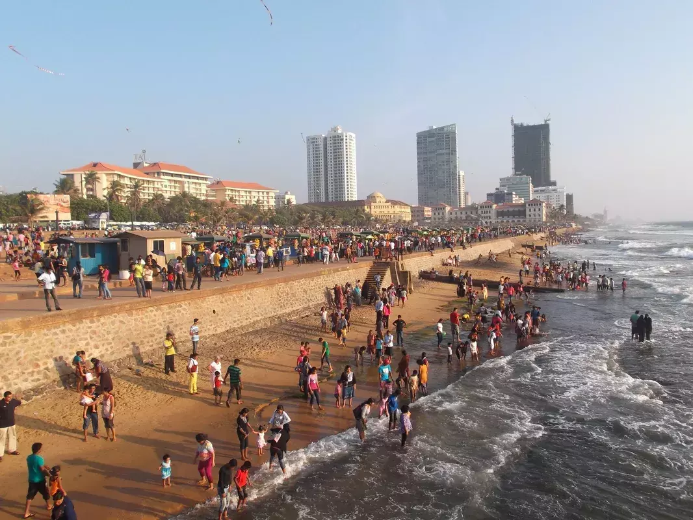

From Pettah Bus stand / Railway Station to Beach side.
1) Galle face green

Evening view of Galle Face Green(busy day). - images by pixabay
A popular urban park and seaside promenade in Colombo, Galle Face Green offers a picturesque view of the Indian Ocean. It's a great place for locals and tourists to relax, fly kites, and enjoy the sunset.
- Location:Click here
- Open time: 24hr
2) Port city
/port city.webp) Evening view of Port city and Galle Face Green. - images by unsplash
Evening view of Port city and Galle Face Green. - images by unsplash
Also known as the Colombo Port City, this is a massive ongoing development project that aims to create a new city area on reclaimed land. It's envisioned to be a hub for business, leisure, and residential purposes.
- Location:Click here
- Open time: 24hr
3) Colombo Port Maritime Museum
 Entrnce of Colombo Port Maritime Museum. - images by wikipedia
Entrnce of Colombo Port Maritime Museum. - images by wikipedia
- Location:Click here
- Open time: 9am - 4pm (closed on Sundays)
4) Colombo Lighthouse
Evening view of Colombo Lighthouse. - images by pixabayAn iconic structure located near the entrance of Colombo's port, the lighthouse serves as a navigational aid for ships entering the harbor. It's also a historic landmark.
- Location:Click here
- Open time: 9am - 6pm
5) Gangarama Seema Malakaya
View of Gangarama Seema Malakaya. - images by unsplashA Buddhist temple situated on a small island in the Beira Lake, it's known for its tranquil setting and intricate architecture. The temple is adorned with beautiful statues and artwork.
- Location:Click here
- Open time: 24hr
6) Beira Lake
/bire wawa.webp) View of Beira Lake and Colombo city. - images by unsplash
View of Beira Lake and Colombo city. - images by unsplash
A scenic lake situated in the heart of Colombo, Beira Lake provides a serene environment amidst the city's hustle and bustle. Visitors can take boat rides and enjoy the surroundings.
- Location:Click here
- Open time: 24hr
From Pettah Bus stand / Railway Station to another direction.
1) Pettah Floating Market
/flooting market.webp) View of Pettah Floating Market. - images by unsplash
View of Pettah Floating Market. - images by unsplash
A vibrant market situated on the banks of the Beira Lake, it offers a variety of goods, including fresh produce, clothing, accessories, and local crafts.
- Location:Click here
- Open time: 8am – 10.30Pm (closed on Sunday)
2) Jami Ul-Alfar Mosque
View of Jami Ul-Alfar Mosque. - images by unsplashAlso known as the Red Mosque due to its distinctive red and white striped exterior, this mosque is a prominent architectural landmark and an important place of worship for the Muslim community.
- Location:Click here
- Open time:
3) Colombo Lotus Tower
/lotus tower.webp) View of Lotus Tower and Colombo city. - images by unsplash
View of Lotus Tower and Colombo city. - images by unsplash
A modern telecommunications and observation tower, the Lotus Tower stands as one of the tallest structures in South Asia. It offers panoramic views of the city from its observation deck.
- Location:Click here
- Open time: 9am – 10pm
4) Viharamahadevi Park
 View of Viharamahadevi Park. - images by wikipedia
View of Viharamahadevi Park. - images by wikipedia
The largest park in Colombo, it's a green oasis offering recreational facilities, including playgrounds, jogging paths, and a giant Buddha statue.
- Location:Click here
- Open time: 6am - 6pm
5) Colombo National Museum
 Front iew of Colombo National Museum. - images by wikipedia
Front iew of Colombo National Museum. - images by wikipedia
This museum houses a vast collection of artifacts and exhibits that showcase Sri Lanka's history, culture, and art. It's a great place to learn about the country's heritage.
- Location:Click here
- Open time: 9am – 4pm
6) Independence Square
 View of Independence Square. - images by lakpura.com
View of Independence Square. - images by lakpura.com
A historic landmark commemorating Sri Lanka's independence from British rule, the square features an impressive monument and is surrounded by manicured gardens.
- Location:Click here
- Open time: 24hr
7) Independence Memorial Museum
 View of Independence Memorial museum. - images by wikipedia
View of Independence Memorial museum. - images by wikipedia
Located near Independence Square, this museum delves into Sri Lanka's colonial past and its journey to independence, using exhibits and displays.
- Location:Click here
- Open time: 9am – 5pm (closed on Sunday and Monday)
8) Sri Lanka Planetarium
 View of Planetarium, Sri Lanka. - images by wikipedia
View of Planetarium, Sri Lanka. - images by wikipedia
An educational and entertaining institution, the planetarium offers shows and exhibits related to astronomy and space science.
- Location:Click here
- Open time: 8.30am- 4pm (closed on Sunday and Monday)
The blog is by Site admin

/bgpic.webp)